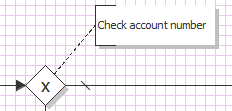

Process models

Topic content
Content of this page
oConfigure the properties of the model
oEdit the activities of the model
Concept
A process model describes the sequence of steps necessary to process a certain task. In Orchestra we use the Business Process Model Notation (PBMN) to describe process model in a graphical form. BPMN is a graphical notation together with a clear semantics to describe the behaviour of a process. See BPMN 1.2 for details.
The following picture shows a small example of a process model
This model shows an external system, in this case a SAP system, which sends a message to Orchestra. The arrival of this message is depicted by a Start events specifically a Message event (the circle containing a letter). Then we see an activity named map mm_CREMAS03_Disp. This is a Message mapping which transforms the message sent from SAP to another structure. Then we see that the sequence flow branches out into two parts. One branch (the default sequence flow marked with a backslash) does nothing the other part leads to a Call activity which sends data to a File Writer channel which is responsible for writing the data to a file system. Which of the two paths is taken at runtime is decided by a so called exclusive gateway (the diamond symbol). At this point a condition (not shown here) is evaluated on the data and the result decides which path to follow. by cont The end of the process model is marked by a End event. Also you can see two comments in the process model which according to BPMN are called Txt Annotations.
Creation
To create a process model select the group process models in the tree of scenario elements, click the right mouse button and select the item Create.
Then the dialog Create new process model pops up.
1.First you enter an appropriate name for the new process model and optionally a short description.
Dialog to name and describe a new process model
2.After clicking the button the process model is created and the panel to design the model is opened. Actually initially this is an empty sheet where the developer has to place the elements of the process model.
Configuration
A process model is configured by changing its properties and by designing its visual representation.
In Orchestra a process model is built using the Business Process Model Notation (PBMN). In the designer double click on a process model to open the model editor.
On the right side of the designer you will find a minimized Panel named Process. It is opened whenever the mouse is drawn over it. To fix it click on the small needle in the top bar of the window. The panel contains a tree of so called flow objects which you may use as parts of a process model.
To add such an object to the process model select it in the tree, then move the mouse into the model area and click again
If several elements where put into the model you connect them by a sequence flow. Whenever a flow object is selected, a small arrow is visible on the right top edge of it. Grab it with the mouse and draw it to the target object.
This way a sequence of activities is created.
On the left side of the designer there is the tree of scenario elements. Some of these elements can also be added to a process model. These are Message mappings and all elements which may be called from the model, specifically Channels, other Process models (Sub process models), Web Service Declarations and REST Services (Elements of type REST Service Client).
To add such an object to the process model select it int the tree, then move the mouse into the model area and click again. To connect these elements you have to create message flow. The direction of the flow depends on the type of the element. E.g. in case of an Inbound channel the data flows from the channel to a Start event. So Move the mouse over the channel, then a small arrow is visible on the right top edge of it. Grab it with the mouse and draw it to the the Inbound event. This way a so called message flow is created.
In case of Outbound channels, the channel is invoked by a Call or a Send activity. So Move the mouse over the activity, then a small arrow is visible on the right top edge of it. Grab it with the mouse and draw it to the the outbound channel. Also some Inbound channels like the HTTP GET Receiver may receive date through the Response activity.
In this case the direction of the message flow is from the activity to the channel.
To document a process model behaviour you add Text Annotations to the model. To do that select the Annotation element in the tree of flow objects, then move the mouse into the model area and click again.
You connect the Annotation in the same manner as you connect other elements. 
For more details see the specific pages for the process model elements.
Editing the properties of a process model
To open the properties of a process model select the process model in the scenario element tree, click the right mouse button and select Properties in the popup menu.
Tabulators to configure properties of a process model
There are five sections (tabs) where the user may change the properties of the model.
Profile
In this tab the user may change the basic properties of a process model specifically its and .
The subsection describes some properties connected to performance and recovery behaviour:
•Process type The process type describes the general nature of a process. There are two options to select, Optimize for long running processes and Optimize for short process duration.
The setting short process duration attaches importance on processing duration. With this setting Orchestra tries to reduce the overhead imposed by its internal queues. It tries to schedule all activities of a process instance for immediate processing. Typically this option is selected for web services and similar processing like REST.
The other process type long running processes states, that Orchestra has more time to execute a process instance. This mode is preferable with batch processes where no human user is involved and by asynchronous processing. The option short process duration is nothing more than a hint. Orchestra tries to execute it fast, but if the system is heavy loaded, it may automatically change the mode to long running.
•Message category There are two options to select, Small messages and Mass data processing
If a message is to be processed by Orchestra, e.g. when executing a mapping, by default the message is loaded completely as a DOM tree into memory. This is the Small messages mode.
•Manual recovery there are two alternatives to handle recovery behaviour, Abort process on error and Use manual recovery for processing errors
Whenever in the execution of a process model an error occurs, Orchestra has to decide, how to handle the error. If the recovery mode Abort process on error is activated, the processing will be aborted in case of an error. If the recovery mode Use manual recovery is activated, the process will be suspended until a user corrects the error situation. This may comprise changing the process variables manually or simply restart of the processing. Of course the user also can abort the the process. This Option can be considered as default setting, which is in effect if an activity doesn't set another behaviour. On any particular activity of a process model it is possible to overwrite the behaviour, e.g. react with an error event or specifically set manual recovery on a certain activity.
The Subsection describes how and in which detail level the steps of a process are logged. Logging in this context means that the information about the processing of process instances can be viewed in the Orchestra Monitor.
•Mode Defines if after successful processing the tracing data shall be deleted or not. If a process instance fails its log information is never deleted automatically.
•Level There are five levels Minimal, Process start/stop, Process start/stop, activity enter/leave, Process start/stop, activity enter/leave, process variables and Process start/stop, activity enter/leave, process variables, local variables. Also the user may select <default> meaning that Process start/stop, activity enter/leave and the values of process variables are to be logged.
There are two alternatives for transaction handling, Transaction per activity and Global transaction with XA-resources.
By default Orchestra executes every process activity within one transaction. if something goes wrong, only the work of the current activity is reset. Changes of activities executed before remain valid. This mode is in most cases preferable because it keeps complexity small. Anyway Orchestra offers the possibility to select global transaction handling through a two phase commit based on the XA protocol. If this option is activated, Orchestra tries to create a distributed transaction over the whole process. To enable this, Orchestra contains its own internal transaction manager, handling the two phase commit protocol. Only when the whole process is successfully executed, the transaction will be committed, otherwise a rollback is done. Currently this technique is possible only when working with database channels and the Message Queue Sender channel, other channels don't support the rollback of an operation, thus the technique is quite limited.
In the case of Global transaction handling Orchestra allows to decide between two options Always create new transaction and Use existing transaction or create new. In the latter case, if creating a sub process and there exists already a transaction then attach to this transaction instead of creating a new one.
Process state
This tab defines the strategies used to manage the state of active process instances.
State handling of a process model
•Process mode defines where the state information is stored. There are three possibilities: Volatile (State information only on memory), Persistent (State information stored in database) and Volatile with recovery (Initial state is stored in the database). In Volatile mode all information is lost when the server crashes. But on the other hand this is the most performant mode because there is no database operation involved. In a scenario where a transaction can easily be repeated this is probably the best mode. The most secure mode is of course the Persistent mode because in this case the process can continue at exactly the state where it was when the server crashed. But it may cost a lot of performance to store the process state again and again onto the database, especially if the state comprises a lot of variables. So a good compromise might the mode Volatile with recovery meaning that only the initial state of the process is stored in the database. This way after a server crash the process instance can be redone starting from its initial state. The initial state is comprised by the values of the initial variables which caused the process instance to be created. These variables typically are the data delivered from an Inbound channel.
Note that also the Logging level in tab Profile affect the performance significantly.
•Redeployment strategy There are two Alternatives:
oAbort running processes If during a redeployment of a sceneario process instances are active these instances will be aborted automatically before redeployment; they will never be restarted.
oRestart after deployment. If during a redeployment of a sceneario process instances are active these instances will be restarted after redeployment. They will again start from the very beginning a restart in a step between is not possible. This behaviour is sensible because only this way Orchestra can react to changes process models.
•Manual restart If this option is Activated a process can be restarted manually even if the process was aborted or successfully terminated. To enable this, the start information of the process is persisted on the database until the housekeeping deletes the process completely.
Properties
Here the user may create, change or delete variables of process models, which according to BPMN are called Properties. For details see Process model variables (properties).
Scheduling
This tab states the order in which process instances are scheduled.
Scheduling options of a process model
•Priority This value affects the behaviour of internal execution queue. Normal is standard, High is a hint the the process engine that these processes are important.
•Subprocess mode This value affects the behaviour of
•Scheduling
oParallel means that processes can be executed in parallel without any constraints. It also leads to a high throughput.
oSequential means that processes are to be executed in sequence, one after another. Orchestra ensures that at any time only one instance of this process model is working. Another process cannot start until the working process is finished. The order of the processes is defined by the order of the external events which caused the creation of the processes.
oGrouped means that the processes are divided into groups. All processes within a group are executed sequential. Processes in different group are executed in parallel. The definition of a group is done by a grouping variable. This variable is a process property that has to be filled by the start of the process.
•Execution mode This setting is only active in sequential scheduling mode. If Best effort is selected, the processes are executed sequentially but it is not guaranteed that the order is exactly the order in which the data was received from the Inbound channel. If mode FiFo is selected, Orchestra guarantees, that the processes are executed in exactly that order in which the data was received.
These are special Process variables (properties) which carry identifiers of the data processed. They are helpful in tracing the data processed by Orchestra.
Selecting the business keys of a process model
If for example Orchestra is used to process bank account data, it is probably necessary to define a variable (property) accountNumber. If then the user selects this property to be a business key, in the Orchestra monitor the value of this account number is shown in the monitor tables. The Administrator then also can search for all process models which processed a certain bank account using that specific account number.
Editing the activities of a process model
To edit an activity like a Call double click on it or click the right mouse button and select in the popup menu. In case of a Mapping a double click opens the Mapping editor, so you must use the popup menu in this case. Typically in the activity you have to assign values to the parameters of the called element or assign the result values to Process variables. To do this it might be necessary to add Variables (Properties according to BPMN) to the process model.
E.g. the Call activity has the following edit dialog where the user can change the activity.
configuration tabs of the call activity
Most important are probably the tabs and . See the details of the according activities for more information.